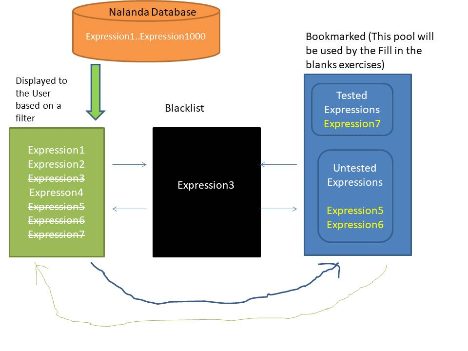
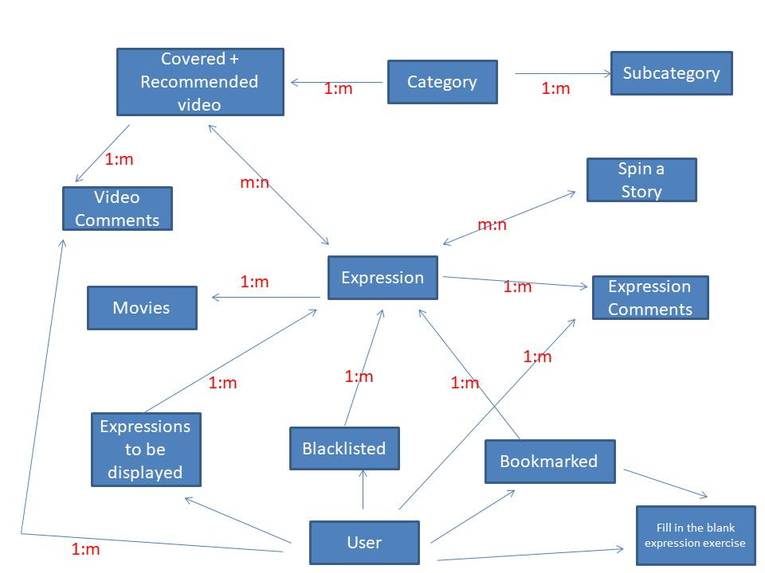
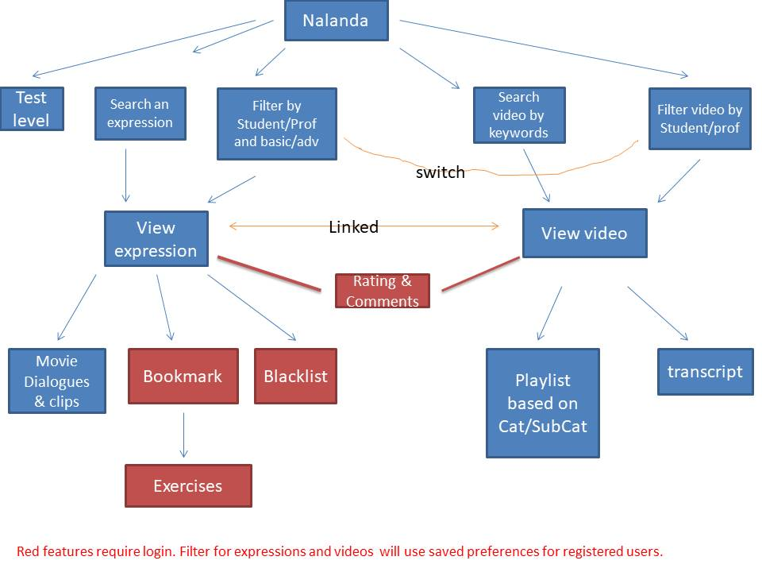
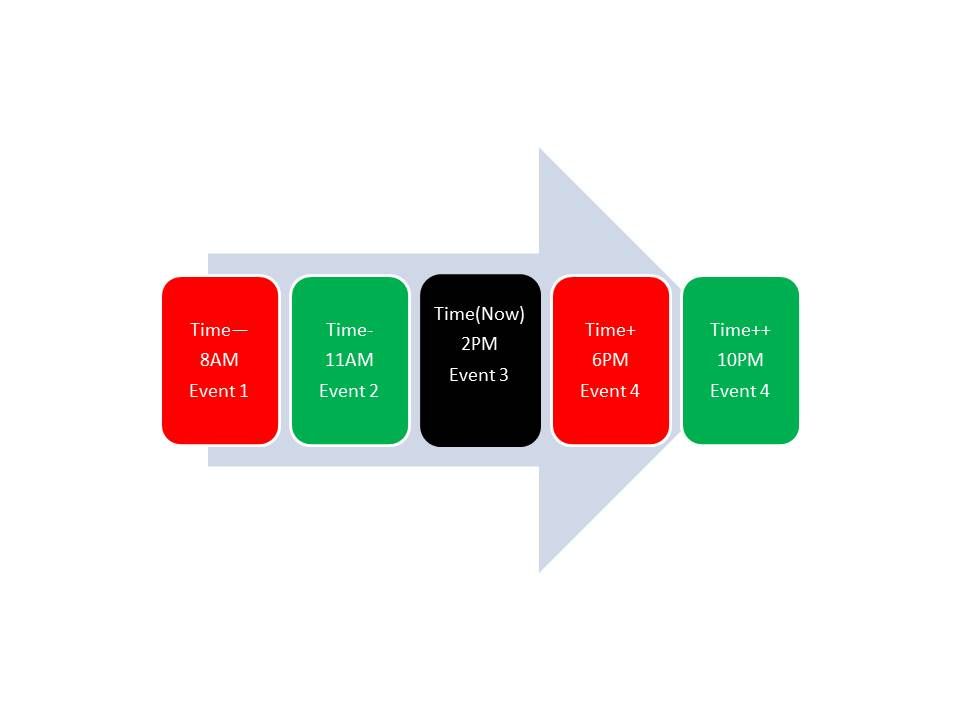

Here are the open questions....
Q. How should the videos be displayed?
Ans: I would prefer youtube style page for displaying videos, along with a list of suggested videos. We need the concept
of playlist also. For example, if someone want to view all the videos related to job interview, only coffee shop interviews,
only bar interviews etc.
Q. Do we need videos in various accents?
Ans. As per the feedback so far we need actors with different accents.
Q. What is the difference between categories and tags?
Ans. Categories are fixed in Nalanda and any video will be part of a category. Tags will be used as meta data for expressions.
For example, if an expression is generally not used in writing then we can put tag as 'Not suitable for writing'. If
the expression is country specific then we can tag it as 'US, UK etc..'. We need to allow search by tags also. Can this
category and tags concept be improved?
Q. How will we allow users to bookmark and blacklist the expressions?
Ans: Registered users will be allowed to blacklist and bookmark the expressions. If the user already uses the expression
then they can prevent the expression from displaying again.
If the user likes the expression then they can bookmark the expression. We will help the users to memorize and recall
with effective techniques. See the below diagram to understand the concept.
As per the diagram below, expressions 3,5,6,7 will be removed from the view for the user after they are moved to other
buckets.

Q. How the various entities in the website are related?
Ans: The below diagram provides high level Entity Relation Diagram(ERD). We need to finalize what attributes these entity.
This diagram is NOT for database design. More later...

Q. How the flow for Student and Professional users can be understood?
Ans: The below diagram provides high level flow diagram:

Q. What are the tasks of admin/support staff?
Ans:
- Add/update/remove expressions
- Add/update/remove videos
- Remove offensive comment and/or user
- Add/update/remove movie dialogues/clips
- Add/update/remove scripts/spin a story and other exercises
- ??
Q. What micro-services will be developed?
Ans: The list below is a quick thinking about the services. Some APIs may be exposed to third party for business process
integration, rest will be for internal to our system. We can do further merging or break down when we discuss in detail.
- getExerciseForExpression(expressionStr, Level)
- getBookmarkedExpressions(userName)
- getBlacklistedExpressions(userName)
- getExpressionsToDisplay(filter based on default or user preference)
- getVideosToDisplay(filter based on default or user preference)
- login(userName, role)
- register(userName, emailID, other preferences)
- getMovieClipsForExpressions(expressionStr, Level)
- searchExpression(expression search string)
- searchVideos(video search string)
- getVideosOfACategory(categoryName, subCategoryName)
- getTranscriptOfVideo(videoTitle, language)
- getExpressionsCoveredInVideo(videoTitle)
- getVideosCoveringAnExpression(expressionStr, Level)
- getNumberOfLikesForExpression(expressionStr, Level)
- getNumberOfLikesForVideo(videoTitle)
- getNumberOfDislikesForExpression(expressionStr, Level)
- getNumberOfDislikesForVideo(videoTitle)
- addUser(userName, role)
- removeUser(userName)
Q. How the tenses can be learned effectively?
Ans: The timeline in below diagram is very helpful. The red blocks are for the reference of time/event in case of past
and future perfect tense. More later..

Q. What are the duties of the support, moderator and admin users?
Ans: Support user duties:
- Add/Edit/Delete expressions
- Add/Edit/Delete videos
- Asses the level of English of users based on the voice chat
Moderator user duties:
- Add/Remove support users
- Approve/Reject content
- Publish content
Admin user duties:(Admin user should be created directly in database, not through UI.)
- Add/Remove support and moderator users
Q. What is the format of an expression?
Ans: Following formats of an expression are possible:
- put (1) together --Here (1) be present or absent
- ??